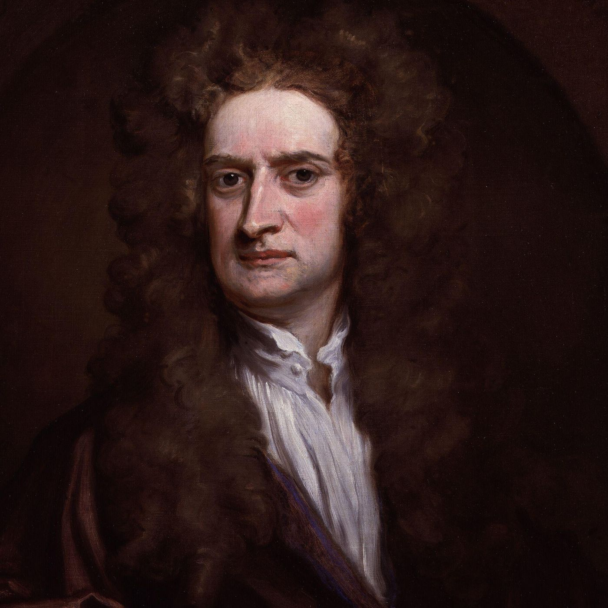

Did Isaac Newton write about the Bible?
JULY 18, 2026

The scientist's other library — and where it touches this one
"I've heard that Isaac Newton — the gravity and calculus Newton — wrote a huge amount about the Bible and prophecy. Is that true? And is any of it something you'd use in this translation?"
It is true, and it is stranger than most people know. The man who wrote the Principia left behind more words on theology, prophecy, and church history than on physics and mathematics combined — on the order of a million or two, most of it never published in his lifetime and only fully catalogued in the last century (the Yahuda and Portsmouth papers). Newton saw no wall between the two studies. He believed God had written two books — the book of nature and the book of Scripture — and that both were coded, lawful, and open to patient decoding by the same careful mind. He read Hebrew and Greek, collated manuscripts, drew up chronologies, and worked over Daniel and Revelation the way he worked over the orbits of the planets: as a system with hidden rules, to be recovered, not invented.
Three of his biblical works were printed after his death and are long out of copyright. Remarkably, all three land on ground this project already stands on — so yes, they are worth knowing, and we keep our own copies so a dead link can never lose them (see "Did we use any of it?" below).
1. His reading of Daniel and Revelation (1733)
"Observations upon the Prophecies of Daniel, and the Apocalypse of St. John." This is Newton's big published book of biblical interpretation, and it takes on exactly the two apocalyptic books this translation has begun — Daniel and Revelation. He read them as a historicist: the beasts, horns, and seals are a symbolic map of real empires and church history, to be matched piece by piece against the record. He treated the imagery almost as a fixed vocabulary — a sun for a king, a beast for a kingdom — and decoded it with the same confidence he brought to a physical law.
What to make of it. Newton is dazzling here, and dated. His historicist scheme — reading the prophecies as a running commentary on the rise of Rome and the medieval church — is one honorable tradition among several (this library lays those traditions out, with their pedigrees, in the Daniel and Revelation notes, and casts no vote). And a famous footnote: in a separate, unpublished paper Newton once calculated that the world could not end before the year 2060 — reckoning from Daniel's 1,260 "days" read as years. It is often misreported as a doomsday prediction; his own point was the opposite. He was rebuking the date-setters of his day: not "the end comes in 2060," but "stop announcing it sooner — the arithmetic won't even allow it." A scientist's caution, aimed at zealots.
2. His textual criticism — and the Johannine Comma (1754)
"An Historical Account of Two Notable Corruptions of Scripture," written as a private letter to John Locke around 1690. This is Newton at his most rigorous, and it touches this site at its most sensitive seam. He argues, verse by verse and manuscript by manuscript, that two famous Trinitarian proof-texts were not original but crept into the Bible later: the Johannine Comma (1 John 5:7, "there are three that bear record in heaven, the Father, the Word, and the Holy Ghost") and the reading of 1 Timothy 3:16 ("God was manifest in the flesh" versus "he who was manifest").
Here is the striking part: on the textual facts, Newton was right, and modern scholarship — of every doctrinal stripe — agrees with him. The Johannine Comma is absent from every early Greek manuscript and every early translation; it surfaces first in late Latin copies and is now dropped or bracketed by essentially all critical editions. That is precisely why this site's New Testament introduction already names the Comma among the handful of famously disputed passages the notes will flag when we reach them. So Newton's method here — weigh the oldest and widest manuscript witnesses, ask which reading best explains how the others arose — is the very method the Greek-Scriptures page describes. When 1 John 5 is eventually translated, his letter will be the classic witness in the note.
3. His biblical chronology (1728)
"The Chronology of Ancient Kingdoms Amended." Newton spent decades trying to fix the dates of the ancient world — Egypt, Greece, Assyria, Israel — against the biblical record and the astronomy he could reconstruct, arguing the standard chronologies of his day had stretched history too long. It is, in effect, his own version of the project behind this site's Chronology feature: the same impulse to place the story on a timeline. His specific conclusions have not survived the two centuries of archaeology since; but the instinct — build the timeline from the sources, show your working — is a kindred one.
The one thing to hold at arm's length
There is a reason to read Newton's biblical work with care, and it would be dishonest to hide it. Privately, Newton was an anti-Trinitarian — an "Arian," in the old term: he held that the Father alone is God in the fullest sense and that the Son is subordinate. He kept it secret (it would have cost him his Cambridge post and worse), but it shaped what he studied. His Two Notable Corruptions is not disinterested textual criticism that happened to land on two verses — it is aimed, deliberately, at the two verses most used to prove the Trinity.
So the honest distinction is this. Newton's textual finding — that the Johannine Comma is a late insertion — stands on its own evidence and is accepted today by scholars who hold the Trinity as firmly as any (the doctrine never rested on that one disputed verse). But Newton's larger conclusion — that the deity of Christ itself is a corruption — is a doctrinal position, and a contested one, exactly the terrain of this library's hardest question: was the Word "God," or "a god"? On that question the site does what it always does — lays out the readings with their pedigrees and does not cast a vote. Newton belongs in that conversation as a famous, formidable witness for one side; he does not get to be the judge, and neither do we.
Did we use any of it — and where are the books?
Where Newton already touches this site: the manuscript apparatus page flags the Johannine Comma he demolished; Daniel and Revelation are the books of his Observations; and the Chronology is the project he attempted first. As the relevant chapters arrive, a Newton observation will occasionally appear in a note — clearly labelled as a voice from history, never as the translation's own ruling.
And we keep the works themselves. All three are fully public domain (Newton died in 1727), and this library now archives its own durable copies so they can't be lost to a broken link — mirrored the way we mirror the Hebrew and Greek source texts. You can read them at their homes: the Observations on Daniel & the Apocalypse and the Chronology of Ancient Kingdoms at Project Gutenberg, and the Two Notable Corruptions of Scripture at the Internet Archive.
My own takeaway: the most famous scientist in history spent his hidden hours doing something very like what this project does — sourcing, collating, comparing, and refusing to take a text on trust. On his best days (the manuscripts) he was decades ahead of his time; on his boldest (the prophecy timetable, the chronology) he over-read the evidence; and on the deepest question he took a side this library will not. Worth knowing, worth keeping — and worth weighing for yourself.
Read in the text
- Daniel 1
- Revelation 1
- Compared against the translation’s seven-version shelf — the NIV, the KJV, the Douay-Rheims, The Living Bible, the 1599 Geneva Bible, the American Standard Version, and the New World Translation. See how the translation is made.